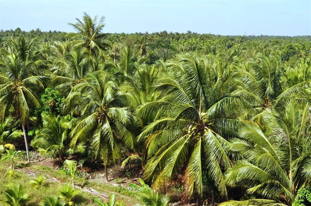

DIỄN ĐÀN CỦA HỘI LIÊN HIỆP THANH NIÊN VIỆT NAM
Cục Bảo vệ thực vật vừa thông báo Cục Kiểm dịch động thực vật (APHIS) thuộc Bộ Nông nghiệp Mỹ đã gửi thư tới cơ quan này thông tin về việc Mỹ mở cửa thị trường với quả dừa sọ Việt Nam. Theo đó, ngày 7.8.2023, APHIS đã hoàn tất việc cập nhật cơ sở dữ liệu trực tuyến yêu cầu nhập khẩu hàng hóa nông nghiệp (ACIR) để phê duyệt việc nhập khẩu dừa tươi từ Việt Nam. Theo Cục Kiểm dịch động thực vật Mỹ, các nhà sản xuất Việt Nam có thể bắt đầu xuất khẩu dừa sọ sang Mỹ "ngay lập tức". Vì APHIS đã phân loại dừa đã tách một phần vỏ là sản phẩm đã qua chế biến nên yêu cầu kiểm dịch thực vật duy nhất đối với các lô hàng sẽ chỉ diễn ra tại các cảng nhập cảnh của Mỹ. Bên cạnh đó, APHIS cho biết đã thông báo nội dung cập nhật tới các Cơ quan Hải quan và Bảo vệ Biên giới Mỹ để tránh bất kỳ sự chậm trễ nào của lô hàng tại các cảng nhập của Mỹ.
Để có được kết quả trên, APHIS cùng với Cục Bảo vệ thực vật đã thống nhất về báo cáo phân tích nguy cơ dịch hại đối với quả dừa có một phần vỏ nhập khẩu từ Việt Nam sang Mỹ. Hai bên đã khẳng định không có sinh vật gây hại là đối tượng kiểm dịch thực vật đi theo hàng hóa và xác định dừa tươi non đã tách một phần vỏ (ít nhất 3/4 lớp vỏ xanh bên ngoài), với nguy cơ lây lan sinh vật gây hại là không đáng kể. Như vậy, quả dừa Việt Nam được nhập khẩu vào Mỹ có thể ở dạng được loại bỏ hoàn toàn lớp vỏ và xơ dừa hoặc dạng quả dừa non đã loại bỏ ít nhất 75% (3/4) lớp vỏ xanh bên ngoài. Do APHIS phân loại quả dừa đã bỏ vỏ được coi là dừa thương phẩm không có khả năng nảy mầm. Cùi và nước dừa bên trong có thể dùng làm thức ăn, nên yêu cầu kiểm dịch thực vật duy nhất là các lô hàng hóa này phải được kiểm tra tại các cảng nhập khẩu của Mỹ.
Tell Ur Mom II - Winno ft. Heily「Cukak Remix」/ Audio Lyrics Video
Điện thoại: 0987654321
Email: web1013@dinhnt.com